<!-- .slide: data-state="front hide-controls" --> <div id="title">Authentication</div> <div id="subtitle">Data Privacy and Security</div> <div id="date">Data Science and Management (DASMA)</div> --- <!-- .slide: data-state="break-blue hide-controls" --> # Authentication Factors --- ## What is Authentication? <div class="content-center"> The process of reliably verifying the identity of someone (or something). <br/> <div class="fragment" data-fragment-index="0"> Authentication can change depending on who must be authenticated: <br/> </div> <div class="fragment" data-fragment-index="1"> A) **Computers** can: - store high-quality secrets (long random numbers) - perform cryptographic operations <br/> </div> <div class="fragment" data-fragment-index="2"> B) **Humans** typically remember only passwords, which can be used to: - Derive a cryptographic key (e.g., hash of password) - Decrypt a higher quality key locally (e.g., decrypt RSA key) </div> </div> --- ## Authentication Factors <div class="content-center"> Different approaches to authenticate people: 1. **What you know** (e.g., passwords, PINs) 2. **What you have** (e.g., tokens, smartphones) 3. **Who you are** (e.g., biometrics) 4. **Where you are** (e.g., location-based) <div class="fragment" data-fragment-index="0"> These approaches can be combined for **multi-factor authentication (MFA)**. <br/> </div> </div> --- ## What You Know <div class="content-center"> Most common: **passwords** and security questions. <br/> <br/> Challenges: - Often guessable (short, not truly random) - Can be captured by malware (keyloggers, fake login screens) - Vulnerable to social engineering - Users reuse passwords across multiple sites </div> --- ## What You Have <div class="content-center"> <div class="fragment" data-fragment-index="0"> **Authentication tokens:** - Physical devices performing cryptographic operations - Generate One-Time Passwords (OTP) valid for limited time <br/> </div> <div class="fragment" data-fragment-index="1"> **Smartphones:** - Software authentication tokens (general purpose, widespread) - Receive OTP via SMS (not 100% secure) <br/> </div> <div class="fragment" data-fragment-index="2"> **Open standards for OTP:** - HMAC-based One-Time Password (HOTP) - Time-based One-Time Password (TOTP) </div> </div> --- ## Who You Are <div class="content-center"> Biometric authentication: <br/> <div class="fragment" data-fragment-index="0"> - **Fingerprint readers:** Widely available on smartphones, but implementation quality varies <br/> </div> <div class="fragment" data-fragment-index="1"> - **Face recognition:** Used in modern smartphones and laptops. Only secure with depth cameras. <br/> </div> <div class="fragment" data-fragment-index="2"> - **Retina examination:** Accurate but requires expensive hardware <br/> </div> <div class="fragment" data-fragment-index="3"> - **Voice recognition:** Active research area, but accuracy affected by health issues and vulnerable to ML-based attacks </div> </div> --- ## Where You Are <div class="content-center"> Location-based authentication is not considered secure on its own since attackers can often fake location. <br/> <br/> However, it can be used as an additional factor: - Websites warn about logins from unexpected locations - Banks may refuse transactions from unexpected locations or at unexpected times </div> --- <!-- .slide: data-state="break-blue hide-controls" --> # Password-Based Authentication --- ## Password Challenges <div class="content-center"> Common problems: 1. **Robustness:** Human-chosen passwords are weak (short, not random) 2. **Transmission:** Never send passwords in clear (vulnerable to sniffing) 3. **Storage:** Must store passwords securely (encrypted/hashed) </div> --- ## How a website/application should store a password? <div class="content-center"> Different approaches: <br/> <div class="fragment" data-fragment-index="0"> 1) *Plain text*: the password is stored in plain text in the database. If the database is leaked, the attacker has access to all passwords! This is not a good idea. **NEVER**. <br/> </div> <div class="fragment" data-fragment-index="1"> 2) *Hashed*: the password is hashed before being stored, i.e., $\\text{hash}(password)$. The website can still verify if a password is correct by hashing what the user enters and comparing it to the hashed password in the database. However, if the database is leaked, the attacker has access to all hashed passwords, but not the original passwords. <br/> </div> <div class="fragment" data-fragment-index="2"> 3) *Salted* and *Hashed*: the password is hashed with a user-specific random salt before being stored, i.e., $hash(password\\,||\\,salt)$. The salt is stored with the password in the database. The website can still verify if a password is correct by hashing what the user enters and comparing it to the hashed password in the database. Why? We will understand this in the next slides! <br/> </div> <div class="fragment" data-fragment-index="3"> <div class="cell-center"> ***How can we break a hashed password?*** </div> </div> </div> --- ## Password Attacks <div class="content-center"> There are three main categories of attacks against passwords: 1. **Brute Force Attack** 2. **Dictionary Attack** 3. **Rainbow Tables** Each has different characteristics, costs, and countermeasures. </div> --- ## Brute Force Attack: Definition <div class="content-center"> Exhaustive key search, i.e., we try all possible combinations systematically. <br/> Characteristics: - Guaranteed to find the password eventually - Time depends on password space size - No intelligence or optimization - Works against any password (weak or strong) <br/> <div class="fragment" data-fragment-index="0"> **EXAMPLE:** For a 4-digit PIN: - Password space: $10^4 = 10,000$ combinations - Try: 0000, 0001, 0002, ..., 9999 - Average attempts to find password: $10,000 / 2 = 5,000$ <br/> </div> </div> --- ## Brute Force: Password Space <div class="content-center"> The size of the password space depends on: - Character set size (alphabet) - Password length $$ \\text{Password Space} = |\\text{Alphabet}|^{\\text{Length}} $$ <br/> <div class="fragment" data-fragment-index="0"> Common character sets: | Character Set | Size | Example | |:--------------|:----:|:--------| | Digits only | 10 | 0-9 | | Lowercase letters | 26 | a-z | | Upper + lowercase | 52 | a-z, A-Z | | Alphanumeric | 62 | a-z, A-Z, 0-9 | | Alphanumeric + symbols | 94 | a-z, A-Z, 0-9, !@#$... | <br/> </div> </div> --- ## Brute Force: Time Estimates <div class="content-center"> Assuming 1 billion (10⁹) attempts per second: <br/> <br/> | Length | Lowercase (26) | Alphanumeric (62) | Full ASCII (94) | |:------:|:--------------:|:-----------------:|:---------------:| | 4 | < 1 second | < 1 second | < 1 second | | 6 | < 1 second | 57 seconds | 34 minutes | | 8 | 5 minutes | 2.4 days | 60 days | | 10 | 3.5 hours | 9.5 years | 1,500 years | | 12 | 100 days | 59,000 years | 13 million years | </div> --- ## Brute Force: Online vs Offline <div class="content-center"> <div class="fragment" data-fragment-index="0"> - Online brute force: - Attack against live authentication system - Limited by network latency and server response time - Typical rate: 10-1,000 attempts/second - Easily detected and blocked - Countermeasures: rate limiting, account lockout, CAPTCHA <br/> </div> <div class="fragment" data-fragment-index="1"> - Offline brute force: - Attack against stolen password database - Limited only by computational power - Modern GPU: billions of hashes/second - Hard to detect (attacker has the data) - Countermeasures: salting, slow hash functions (PBKDF2, Argon2) <br/> </div> </div> --- ## Brute Force: GPU Acceleration <div class="content-center"> <div class="fragment" data-fragment-index="0"> Modern GPUs dramatically accelerate password cracking: - **Hash rates (single GPU, approximate):** - MD5: 200 billion hashes/second - SHA-1: 100 billion hashes/second - SHA-256: 50 billion hashes/second - bcrypt: 100,000 hashes/second - Argon2: 10,000 hashes/second <br/> </div> <div class="fragment" data-fragment-index="1"> - **Why the difference?** - Fast hashes (MD5, SHA) designed for speed - Password hashes (bcrypt, Argon2) intentionally slow - Memory-hard functions resist GPU parallelization <br/> </div> </div> --- ## Dictionary Attack: Definition <div class="content-center"> <div class="fragment" data-fragment-index="0"> A *smart* brute force where we try only likely passwords from a *dictionary*. Indeed: <br/> </div> <div class="fragment" data-fragment-index="1"> A) Humans choose predictable passwords: - Common words: "password", "admin", "welcome" - Names: "john", "maria", "alice" - Dates: "2024", "123456" - Keyboard patterns: "qwerty", "asdf" <br/> </div> <div class="fragment" data-fragment-index="2"> B) The search becomes sustainable: - Much smaller search space - Higher success rate per attempt - Can crack weak passwords in seconds <br/> </div> </div> --- ## Where do dictionaries come from? <div class="content-center"> <div class="fragment" data-fragment-index="0"> 1. **Common password lists:** - RockYou breach (32 million passwords) - LinkedIn breach (117 million passwords) - Have I Been Pwned database (billions of passwords) <br/> </div> <div class="fragment" data-fragment-index="1"> 2. **Language dictionaries:** - English, Spanish, Chinese words - Common phrases and expressions <br/> </div> <div class="fragment" data-fragment-index="2"> 3. **Targeted dictionaries:** - Company-specific terms - Industry jargon - Personal information (names, dates) </div> </div> --- ## Dictionary Attack: Variations <div class="content-center"> Attackers apply **rules** to dictionary words: <br/> <div class="fragment" data-fragment-index="0"> - **Common transformations:** - Capitalization: password → Password, PASSWORD - Leetspeak: password → p@ssw0rd, pa55word - Append numbers: password → password1, password123 - Append symbols: password → password!, password@ - Combinations: password → P@ssw0rd123! <br/> </div> <div class="fragment" data-fragment-index="1"> - **Hybrid attack:** Dictionary + brute force - Use dictionary words as base - Brute force additional characters - Example: "password" + 2 digits = 100 variations </div> </div> --- ## Dictionary Attack: Effectiveness <div class="content-center"> <div class="fragment" data-fragment-index="0"> **Statistics from real breaches:** - Top 10 passwords cover 5% of all users - Top 100 passwords cover 10% of all users - Top 10,000 passwords cover 25-30% of all users - Top 1 million passwords cover 50-60% of all users <br/> </div> <div class="fragment" data-fragment-index="1"> Most common passwords<sup>*</sup> (2026): 1. 123456 2. 111111 3. admin 4. qwerty 5. password <br/> </div> </div> <div class="footnotes"> <sup>*</sup> https://www.passwordmanager.com/most-common-passwords-latest-statistics/ </div> --- ## What about *italian* passwords? <div class="content-center"> <div class="columns-container columns-center"> <div class="col"> <div class="fragment" data-fragment-index="0"> 1. admin 2. password 3. 123456 <br/> </div> <div class="fragment" data-fragment-index="1"> 8. Napoli1926 9. 123Stella 10. Perlanera <br/> </div> <div class="fragment" data-fragment-index="2"> 12. ciaociao </div> </div> <div class="col"> <div class="fragment" data-fragment-index="3"> </div> </div> </div> </div> <div class="footnotes"> <sup>*</sup> https://nordpass.com/it/most-common-passwords-list/ </div> --- ## Rainbow Tables: Motivation <div class="content-center"> <div class="fragment" data-fragment-index="0"> When trying brute force attacks, there is a classic dilemma: A. **Precompute all hashes:** Fast lookup, but requires massive storage B. **Compute on-demand:** No storage needed, but very slow <br/> <br/> <div class="alert alert-hint"><b>SOLUTION:</b> Store only chain endpoints, not every hash.</div> </div> </div> --- ## Rainbow Tables: How They Work <div class="content-center"> **Chain construction:** 1. Start with password, compute hash 2. Apply reduction function $R$ (maps hash → password space) 3. Repeat: hash → reduce → hash → reduce... 4. Store only (start password, end password) <br/> **Key insight:** One stored pair covers thousands of passwords in the chain. <br/> <div class="fragment" data-fragment-index="0"> **Example chain:** `pwd1 → H → hash1 → R → pwd2 → H → hash2 → R → pwd3` - Store: (pwd1, pwd3) - This single entry covers pwd1, pwd2, pwd3 and their hashes. <br/> </div> </div> --- ## Rainbow Tables: Lookup <div class="content-center"> Given hash to crack: 1. Apply reduction function and check if result matches any chain end 2. If match found, regenerate chain from start to find the password 3. If no match, apply hash then reduction and check again 4. Repeat until found or exhausted <br/> **Trade-off:** Small storage, moderate lookup time. </div> --- ## Rainbow Tables: Storage savings <div class="content-center"> | Method | Storage | Lookup | |:-------|:--------|:-------| | Full table | 100% | Instant | | Rainbow table | 0.1% | Moderate | | No precomputation | 0% | Very slow | </div> --- ## Rainbow Tables: The Defense <div class="content-center"> <div class="cell-center"> Salting before hashing completely defeats rainbow tables! </div> <br/> Indeed, when using a salt: $$ h = H(\\text{password} \\,||\\, \\text{salt}) $$ <br/> Each unique and user-specific salt requires a different rainbow table, making the precomputation of rainbow tables infeasible. </div> --- ## Why salting works <div class="content-center"> - 64-bit salt = $2^{64}$ possible salts - Would need $2^{64}$ different rainbow tables - Storage becomes impractical: 64 GB × $2^{64}$ = $10^{21}$ GB <br/> <br/> <div class="alert alert-hint"><b>CONCLUSION:</b> Always use salting to protect against rainbow tables.</div> </div> --- ## Attack Comparison Summary <div class="content-center"> <div style="padding-top: 10px;"> | Attack | Speed | Storage | Success Rate | Defeated By | |:-------|:------|:--------|:-------------|:------------| | Brute Force | Slow | None | 100% | Long passwords | | Dictionary | Fast | Small | 50-60% | Random passwords | | Rainbow Tables | Very Fast | Large | High | Salting | </div> <br/> <div class="fragment" data-fragment-index="0"> **Defense strategy:** 1. Use salting (defeats rainbow tables) 2. Use slow hash functions (slows brute force) 3. Enforce strong password policies (defeats dictionary) 4. Implement rate limiting (slows online attacks) 5. Use multi-factor authentication (adds extra layer) <br/> </div> </div> --- <!-- .slide: data-state="break-blue hide-controls" --> # Are ~*your*~ *my* passwords secure? --- ## Have I Been Pwned? <div class="content-center"> <p>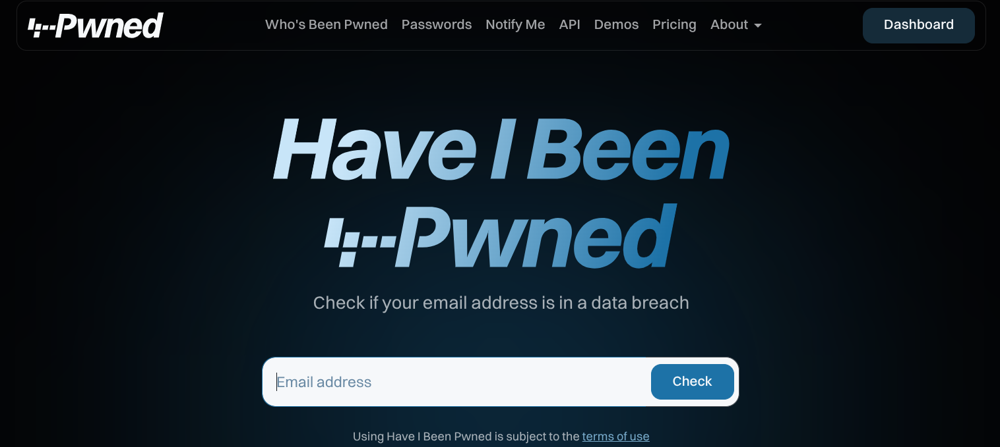</p> </div> <div class="footnotes"> <sup>*</sup> https://haveibeenpwned.com/ </div> --- ## YES... SEVERAL TIMES :( <div class="content-center"> <div style="padding-top: 10px;"> <p>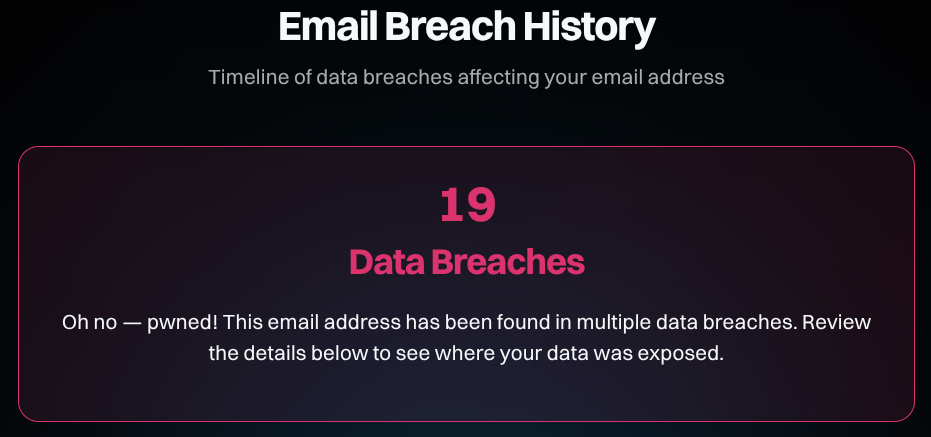</p> </div> </div> --- ## Some of the data breaches where I was involved in <div class="content-center"> For instance: 1. **Trello**: a popular project management tool 2. **Terravision**: airport transportation service 3. **Deezer**: music streaming service 4. **MyFitnessPal**: fitness and nutrition tracking app 5. **Dropbox**: cloud storage service These are billion-dollar companies. Yet, they have been pwened. <br/> Now, you can buy my personal data online on multiple services (with free tiers!). </div> --- ## But they should be secure! <div class="content-center"> Yes, but it does not work like that in the real world: - applications are becoming too complex - they run on cloud infrastructures that are hard to configure - companies care about time-to-market, not security - security is a cost and they want to minimize it - most startups don't have security teams and when they grow, it is often too painful to change stuff - there will be always someone smarter than the developers <br/> <div class="fragment" data-fragment-index="0"> <div class="alert alert-hint"><b>BOTTOMLINE</b>: any service will be compromised... it is only a matter of time. You have to accept it.</div> </div> </div> --- ## How can we survive? <div class="content-center"> <div class="fragment" data-fragment-index="0"> <div class="cell-center"> **REPEAT WITH ME**: *use **only** unique random passwords* </div> <br/> </div> <div class="fragment" data-fragment-index="1"> <div class="cell-center"> No, there is no other safe option. MFA can help and should be used, but it's not a silver bullet. </div> <br/> <br/> </div> </div> --- ## How can remember and type random passwords? <div class="content-center"> You do not have to! You need to use a password manager: 1) When registering on a website, you let the password manager generate a random password for you. 2) When you visit the website, the password manager automatically fills in the password for you. It is simple and convenient. </div> <div class="footnotes"> <sup>*</sup> Unfortunately, there are cases when you perform the login on a third-party device. Only for these cases, you want to pick a password that is more user-friendly to type. Stil, it should be unique and compose random passphrase. </div> --- ## Example of a password manager <div class="content-center"> <br> <div class="columns-container columns-center"> <div class="col"> <div class="cell-center"> Create a new login: <p>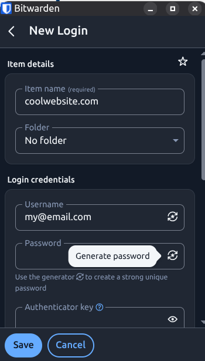</p> </div> </div> <div class="col"> <div class="cell-center"> Generating random password: <p>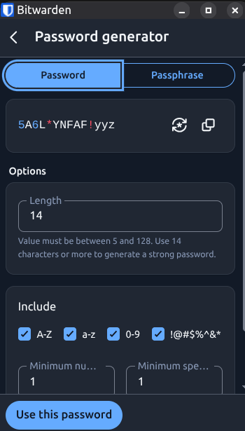</p> </div> </div> <div class="col"> <div class="cell-center"> Generating random passphrase: <p>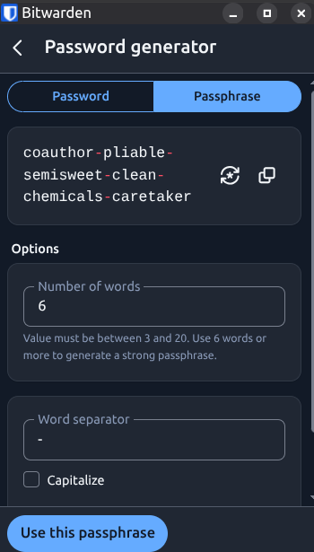</p> </div> </div> </div> </div> --- <div class="content-center"> <div class="cell-center"> Automatic fill-in of the password field: <p>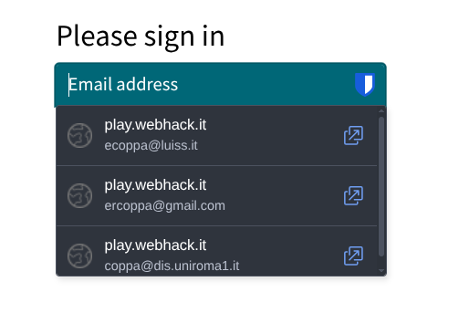</p> </div> </div> --- ## Which password manager? <div class="content-center"> Different possibile choices: 1) **Bitwarden**: open source, multi-platform 2) **Apple Keychain**: proprietary, multi-platform 3) **1Password**: proprietary, multi-platform 4) **LastPass**: proprietary, multi-platform 5) **KeePass**: open source, multi-platform 6) **Dashlane**: proprietary, multi-platform 7) **Enpass**: proprietary, multi-platform ...and many more! </div> --- ## The next generation of password: PassKey <div class="content-center"> Password managers still require some steps. To make the process even more seamless, the community is working on PassKey, a standard for passwordless authentication based on public-key cryptography. <br/> Basic idea: - The user never touches the password, hence, it is said passwordless - The device, when authorized by the user, handles the password registration - When needed, the device automatically provides the password when visiting the website - It is based on public-key cryptography, hence, it is more secure <br/> PassKey requires support from the browser and the website, hence, it will take some time to be widely adopted. </div> --- <!-- .slide: data-state="break-blue hide-controls" --> # Secure Authentication in the Web --- ## How can we verify the identity of a website? <div class="content-center"> For instance, how can you trust to be on the website of LUISS? We need to verify its identity! </div> --- ## Browser verifies the identity of the website <div class="content-center"> <p>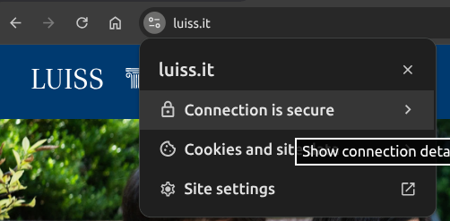</p> <br/> <br/> <div class="fragment" data-fragment-index="0"> <div class="cell-center"> **How?** </div> </div> </div> --- <div class="content-center"> <p>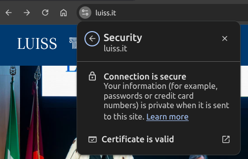</p> <br/> <br/> <div class="fragment" data-fragment-index="0"> <div class="cell-center"> It checks whether the ***certificate*** from LUISS is valid. </div> </div> </div> --- <div class="content-center"> <div class="columns-container columns-center"> <div class="col"> <p>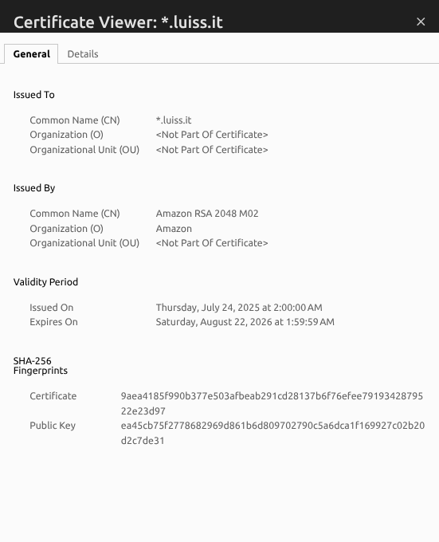</p> </div> <div class="col"> The certificate (see `details` tab): - covers any subdomain of luiss.it - is based on PKCS #1 **RSA** Encryption - 2048-bit key - it contains the public key `(n, e)`, where `e=65537` - has been issued by Amazon - expires on August 22, 2026 </div> </div> </div> --- ## What is a certificate? <div class="content-center"> A X.509 certificate is a digital document that binds a public key to an identity: - it must be signed by a trusted Certificate Authority (CA) - it must be valid (not expired) - an entity pays a CA to issue a certificate - your browser verifies the signature of certificates - your browser ships with a list of trusted CAs and their public keys </div> --- ## How can we trust a CA? <div class="content-center"> - We trust a selected set of CAs, dubbed root CAs. - There are only a few root CAs and there strict controls on them. - They are like the police: we assume they are good. - Browsers and OSes come with a list of trusted root CAs and their public keys. - Root CAs then work with intermediate CAs, which issue certificates to websites. - When we see a certificate signed by a CA, we check which root CA signed it. - Hence, there is a **chain of trust** from the root CA to the certificate. </div> --- ## Chain of trust <div class="content-center"> Applications, e.g., browsers, contains public keys of a few and selected CAs, which are called *root store*, i.e., a list of trusted root CA certificates. X.509 defines a hierarchy that allows an application to trust a certificate from a CA whenever another CA trust it, proceeding recursively until a root CA is met along the path. <p>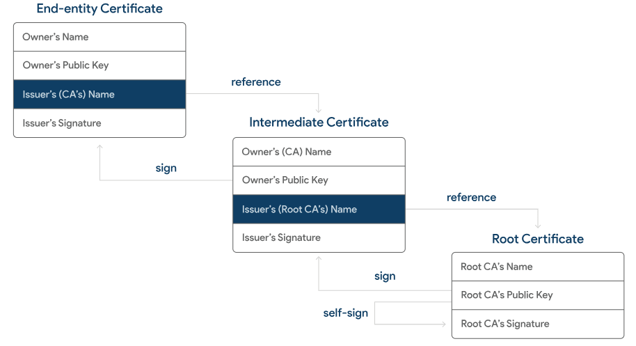</p> Root CAs self-sign their certificate. You can add or remove certificates from an application. </div> --- ## <ins>P</ins>ublic <ins>K</ins>ey <ins>I</ins>nfrastructure (PKI) <div class="content-center"> All the procedurs, systems, and entities that support the issue, revocation, and management of digital certificates is known as PKI. <p>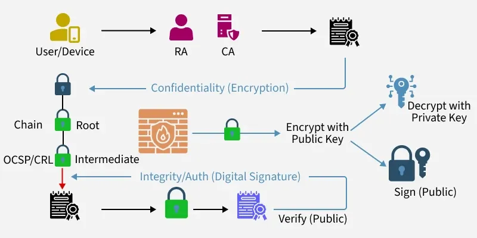</p> </div> --- ## After verifying a certificate, we get the public key of the website <div class="content-center"> Now, we can use this public key to encrypt data that only the website can decrypt with its private key. <br/> <br/> <div class="fragment" data-fragment-index="0"> <div class="alert alert-error"><b>PROBLEM</b>: public key cryptography is slow.</div> <br/> <br/> </div> <div class="fragment" data-fragment-index="1"> <div class="alert alert-hint"><b>SOLUTION</b>: use public key cryptography only for exchanging a symmetric session key</div> </div> </div> --- ## Hybrid Cryptography <div class="content-center"> 1) User visites a website 2) Website sends its certificate 3) User checks the certificate and extract the public key 4) User encrypts a random session key with the public key 5) User sends the encrypted session key to the website 6) Website decrypts the session key with its private key 7) User and website use the session key to encrypt/decrypt messages using, e.g., AES <br/> <br/> <div class="fragment" data-fragment-index="0"> <div class="alert alert-hint"><b>NOTE</b>: These steps are automatically performed by the protocol <b>TLS</b> in the background. TLS is integrated in web browsers in <b>HTTPS</b>, which is HTTP over TLS.</div> </div> </div> --- <!-- .slide: data-state="break-blue hide-controls" --> # Transport Layer Security (TLS) --- ## What is TLS? <div class="content-center"> **T**ransport **L**ayer **S**ecurity (TLS) is a cryptographic protocol that provides secure communication over a network. <div class="fragment" data-fragment-index="0"> It is the successor of SSL (Secure Sockets Layer) and is used to: - **Authenticate** the server (and optionally the client) - **Encrypt** data in transit - **Ensure integrity** of the data exchanged <br/> </div> <div class="fragment" data-fragment-index="1"> TLS is the protocol behind **HTTPS** (HTTP over TLS), which is the standard for secure web communication. <br/> </div> </div> --- ## TLS: Key Properties <div class="content-center"> TLS provides three main security properties: <div class="fragment" data-fragment-index="0"> 1. **Authentication**: the server proves its identity using a certificate (X.509) verified through a chain of trust <br/> </div> <div class="fragment" data-fragment-index="1"> 2. **Confidentiality**: data is encrypted using symmetric encryption (e.g., AES), so eavesdroppers cannot read it <br/> </div> <div class="fragment" data-fragment-index="2"> 3. **Integrity**: data is protected by a MAC (Message Authentication Code), so tampering is detected <br/> </div> </div> --- ## TLS Handshake: Overview <div class="content-center"> Before any encrypted data is exchanged, TLS performs a **handshake** to establish a secure session. The handshake is a concrete example of **hybrid cryptography**. <div class="fragment" data-fragment-index="0"> The handshake combines: - **Asymmetric cryptography** (RSA or Diffie-Hellman) for authentication and key exchange - **Symmetric cryptography** (AES) for fast bulk data encryption - **Hash functions** for integrity checks <br/> </div> </div> --- ## TLS Handshake: Step by Step <div class="content-center"> <div class="fragment" data-fragment-index="0"> **Step 1 - Client Hello:** The client sends a message to the server with: - Supported TLS versions - Supported cipher suites (e.g., `TLS_RSA_WITH_AES_256_CBC_SHA256`) - A client random number <br/> </div> <div class="fragment" data-fragment-index="1"> **Step 2 - Server Hello:** The server responds with: - Chosen TLS version and cipher suite - A server random number - The server's **X.509 certificate** (containing its public key) <br/> </div> </div> --- ## TLS Handshake: Step by Step (cont.) <div class="content-center"> <div class="fragment" data-fragment-index="0"> **Step 3 - Certificate Verification:** The client verifies the server's certificate: - Is it signed by a trusted CA? - Is it valid (not expired)? - Does the domain match? If verification fails, the connection is aborted. <br/> </div> <div class="fragment" data-fragment-index="1"> **Step 4 - Key Exchange:** The client and server agree on a shared secret (**pre-master secret**): - **RSA**: client encrypts a random pre-master secret with the server's public key - **Diffie-Hellman**: both parties contribute to generating the shared secret This is the **asymmetric** part of the hybrid approach. <br/> </div> </div> --- ## TLS Handshake: Step by Step (cont.) <div class="content-center"> <div class="fragment" data-fragment-index="0"> **Step 5 - Session Keys Derivation:** Both parties derive the same set of symmetric session keys from: - The pre-master secret - The client random - The server random These keys are used for encryption (AES) and integrity (HMAC<sup>*</sup>). <br/> </div> <div class="fragment" data-fragment-index="1"> **Step 6 - Finished:** Both sides send a "Finished" message encrypted with the new session keys. This verifies that the handshake was not tampered with. <br/> </div> <div class="fragment" data-fragment-index="2"> From this point on, all communication is encrypted using **symmetric cryptography** (fast!) with the session keys. <br/> </div> </div> <div class="footnotes"> <sup>*</sup> **HMAC** (Hash-based Message Authentication Code) works like a digital signature but uses a shared secret key instead of a public/private key pair. It combines a hash function with a secret key so that only someone who knows the key can produce (or verify) the correct HMAC for a given message. </div> --- ## Recap of a TLS Handshake <div class="content-center"> | Phase | Cryptography | Purpose | |:------|:-------------|:--------| | Client/Server Hello | None | Negotiate parameters | | Certificate Verification | Asymmetric (RSA) | Authenticate server | | Key Exchange | Asymmetric (RSA/DH) | Share pre-master secret | | Session Keys Derivation | Key Derivation Function | Derive symmetric keys | | Data Transfer | Symmetric (AES) + HMAC | Fast encryption + integrity | <br/> <br/> <div class="fragment" data-fragment-index="0"> This is **hybrid cryptography** in action: - asymmetric crypto for authentication and key exchange - symmetric crypto for data transfer <br/> </div> </div>